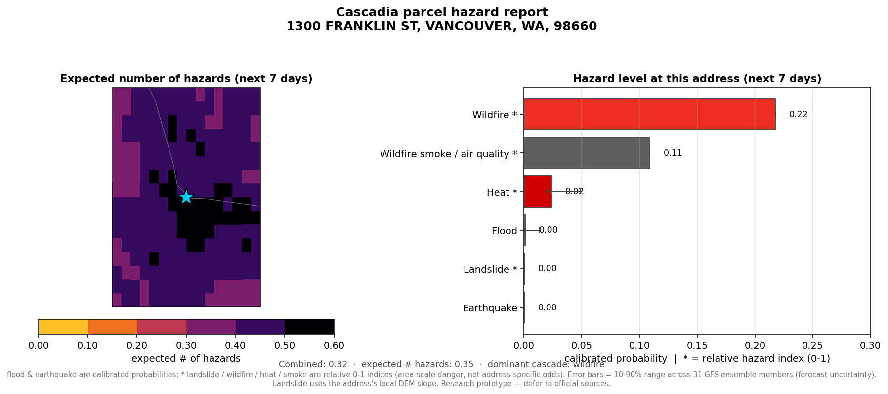
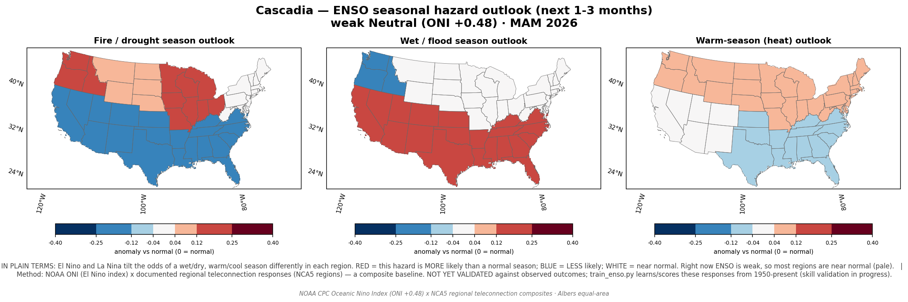
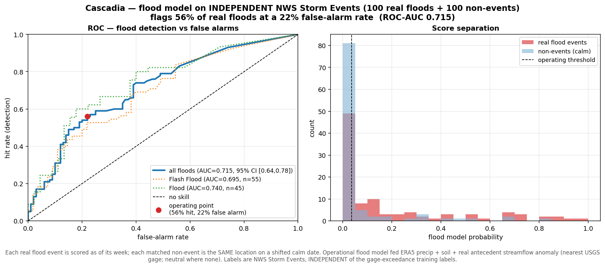
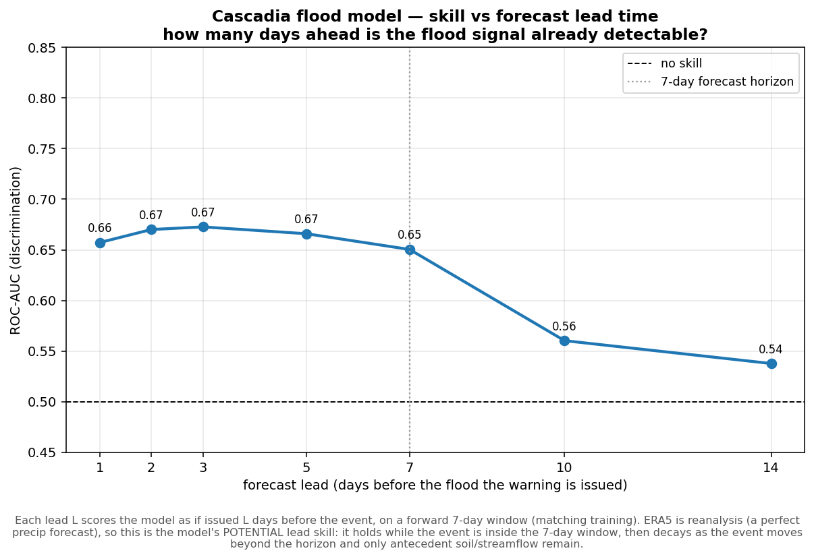
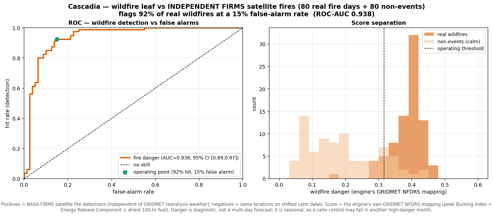
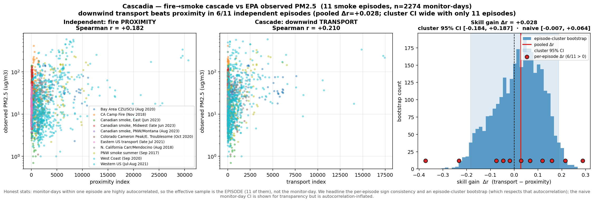
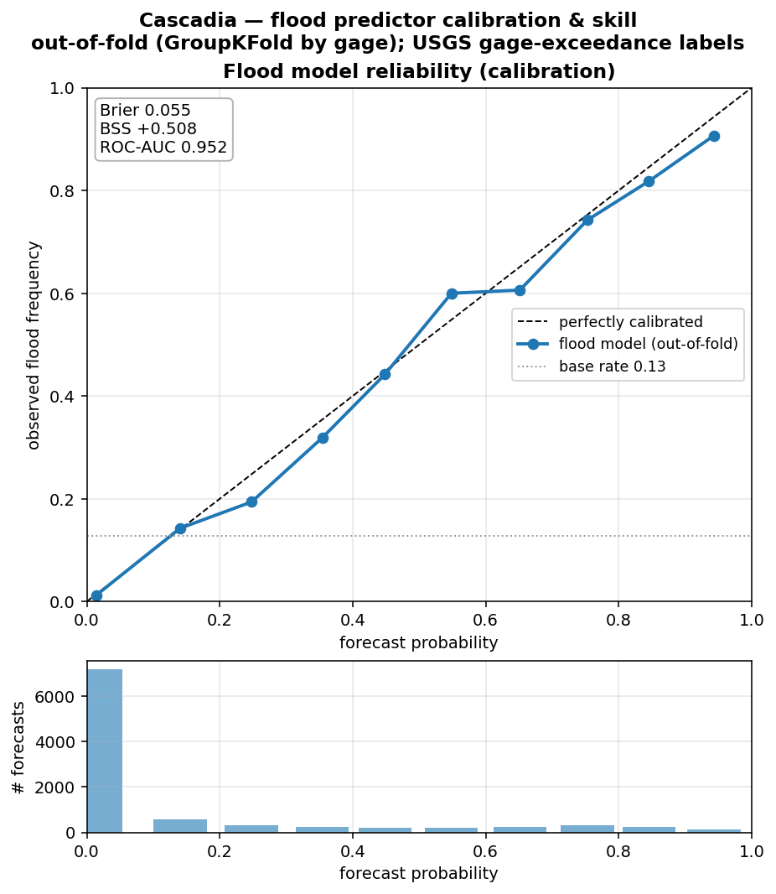
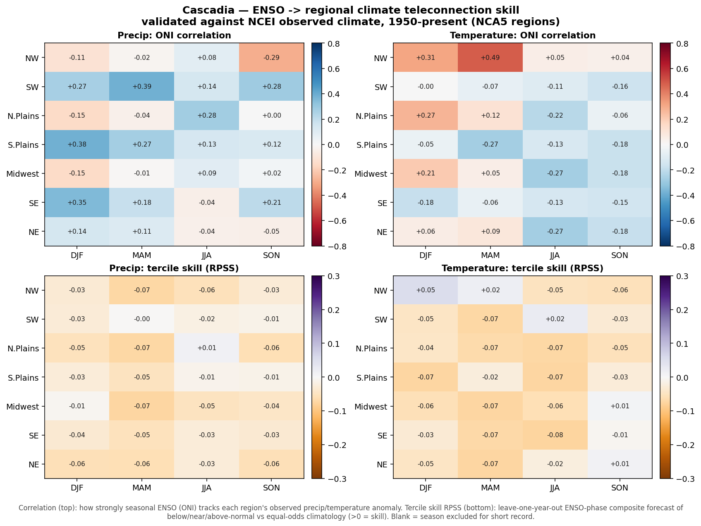

🌎 Cascadia
A compound & cascading multi-hazard engine. Six natural hazards on one map — flood · earthquake · wildfire · landslide · heat · wildfire-smoke — from 100% free public data, for any US address up to the whole country. Built on a probabilistic cascade graph (hazards can trigger one another) and honest about its measured skill.
⚠️ Research prototype — not for operational or life-safety decisions. Defer to NWS, USGS, FEMA, and local emergency management.
See it in action

run.ps1 conditions conus
run.ps1 impact conus
run.ps1 parcel "<address>"
run.ps1 seasonalHow it works
Open feeds → a CONUS-clipped spatial grid → per-hazard predictors (ML + physics) → a cascade graph where probabilities propagate through trigger edges (quake→landslide→flood, fire→smoke, heat→fire) via noisy-OR → a compound-risk surface, then × population for exposure.
Does it actually work?
Every number reproduces with one command — independent labels, matched non-events, bootstrap confidence intervals.
| Test | Result | Caveat |
|---|---|---|
| Flood vs 100 real NWS flood events | ROC-AUC 0.715 (0.73 same-season control) | daily grid under-resolves flash floods |
| Flood lead time | skill holds to 7 days, then decays | ERA5 ≈ a perfect precip forecast |
| Wildfire vs 80 satellite (FIRMS) fires | ROC-AUC 0.71 same-season | danger is diagnostic, not a forecast |
| Flood calibration (out-of-fold) | AUC 0.95, Brier skill +0.51, on-diagonal | in-distribution |
| Does the cascade add skill? | honest negative — CI spans 0 | crude single-day transport proxy |
| ENSO → US seasons | r ≈ 0.4 but RPSS ≈ 0 | weak predictor — labeled as such |
Validation figures





